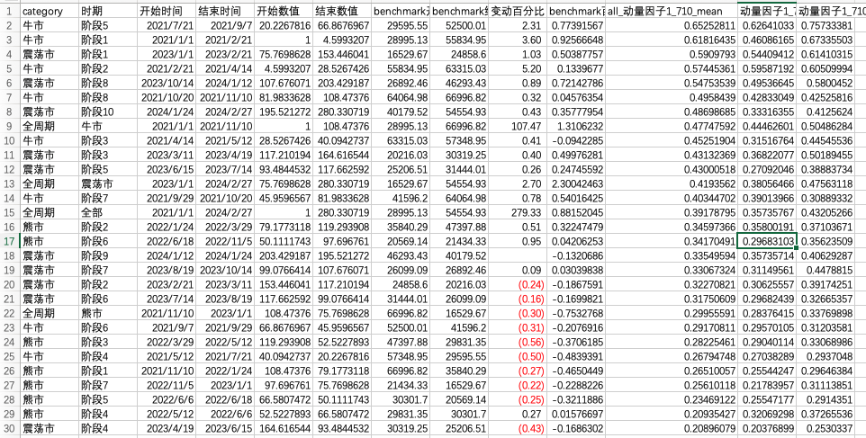

尝试把威科夫中的spring进行因子化。
背景
看完了第一遍《威科夫操盘法》。我对于威科夫的分析的基本概念在于通过市场的成交量判断需求和供给之间的关系。判断日后的走势。
关于买入点，其定义了spring这样的一个概念。其K线上的表现为在长周期上是上升趋势，短期内价格突破支撑线，然后反弹。而产生这种走势的原因在于，市场上需求占据主导的。
比如下图中就是一个标准的spring。
我的理解
从Spring的定义出发，其实我对于spring分解成下面3个关键点。
- 长周期上是有上涨趋势的。这样也就是表示了保持动量的。
- 市场上，应该缺少供给的。表象可以说是不活跃的。
- 应该在支撑点上方买入。
因子设计
做了一个初学者。发觉手里工具不多。最后我因子化定义为其中两个的组合。
- 动量因子1，动量因子1代表的是现在价格。在过去N周期之内的位置。取值范围是0到1。
- 流动性因子NetBuyStd，根据威科夫的理论，供给或者需求有一方缺少的时候，交易量就会稀缺。我在这里定义成流动性低。
- 其中这样做的有个问题，因为流动性变低，也可能是需求减少。这点没有考虑到。
最后的因子大致长成这样。根据J神的经验，如果一个因子，你喜欢他，就乘上他，如果讨厌他，就除以他。
而在我设计这个因子的时候，我喜欢的是他在高位。讨厌的是他流动性高。
1 | def signal(*args): |
实盘因子我做了一点处理，但是大致意思就是如此
研究
我通过我的回测程序，定位到收益比较好的参数为在710，持有时间为12H，买入币为前10%的币，包含现货的纯多策略。
大概是1个月左右。之后的分析，都是基于这个做具体分析。
基本用了论坛最新的框架。然后自己写了一些工具来做分析。我自己的分析每笔的transaction的工具已经发布。
有些还没有发布。
和市值相关的研究
下面是市值的研究，这个策略比较偏向于买小市值的币。
我的统计方法是，把市值从小到大分成10组。然后统计买入的时候，该币的市值属于哪一组。成了下面的图。总体来说，还是偏小市值的币。
最小的那一组，其实买的也不是很多
周期的研究
我把2023年之前。分成了几个周期，然后以BTC作为Benchmark。对不同周期进行比较。得出以下几个结论。
- 总体来说，比较适合牛市。在牛市的收益会高出很多。熊市亏的少了一半，震荡的环境下差不多。
- 和动量因子1正相关。可以看下面第二张图。动量因子1小的时候，基本都亏的。
设计因子的相关性
动量因子1的相关性

以后优化点
- 对动量因子1做一点单独的优化。比如过滤，加上一些惩罚函数这类。
- 加入支撑因素研究。
- 尝试一下多一空一或者CTA。